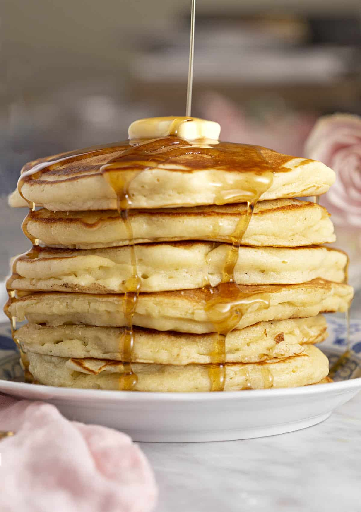

Pancakes

Description
The fluffiest and butteriest pancake recipe in the world!
Ingredients
- 1.5 cups all-purpose flour
- 3.5 tsps baking powder
- 0.25 tsps salt
- 1 tbs white sugar
- 1.25 cups milk
- 1 egg
- 3 tbs butter, melted
Steps
- In a large bowl, sift together the flour, baking powder, salt and sugar.
- Make a well in the center and pour in the milk, egg and melted butter; mix until smooth.
- Heat a lightly oiled griddle or frying pan over medium-high heat. Pour or scoop the batter onto
the griddle, using approximately 1/4 cup for each pancake. Brown on both sides and serve hot.